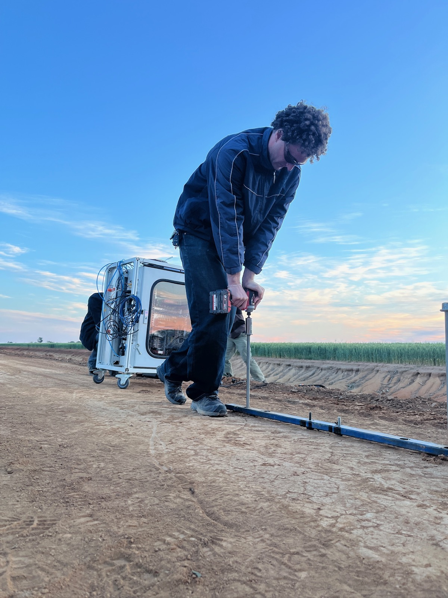
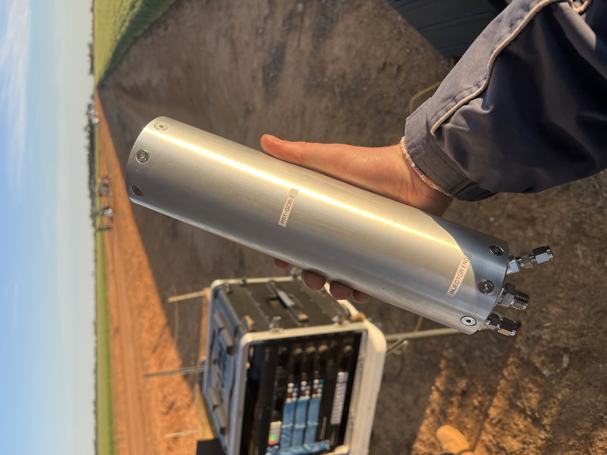
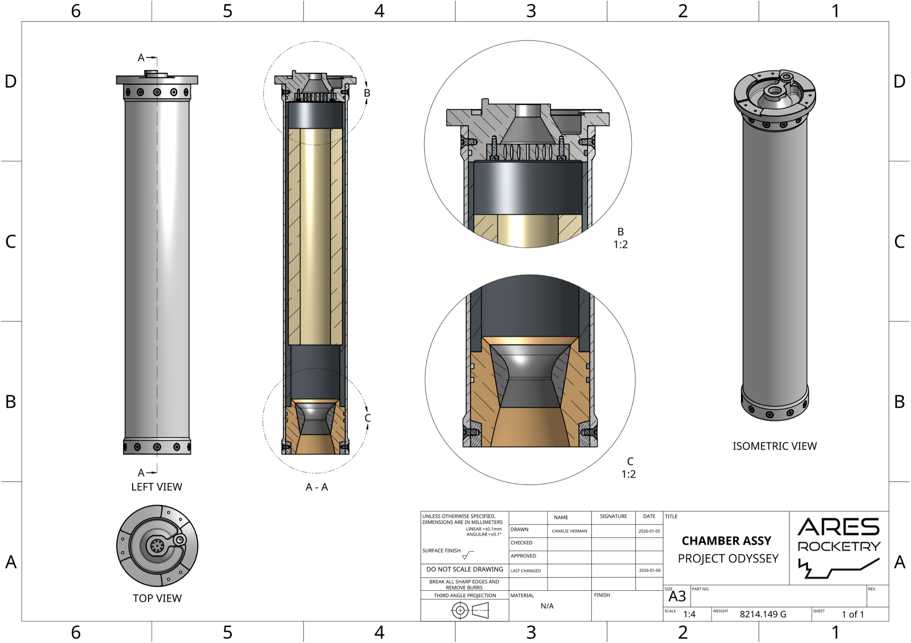
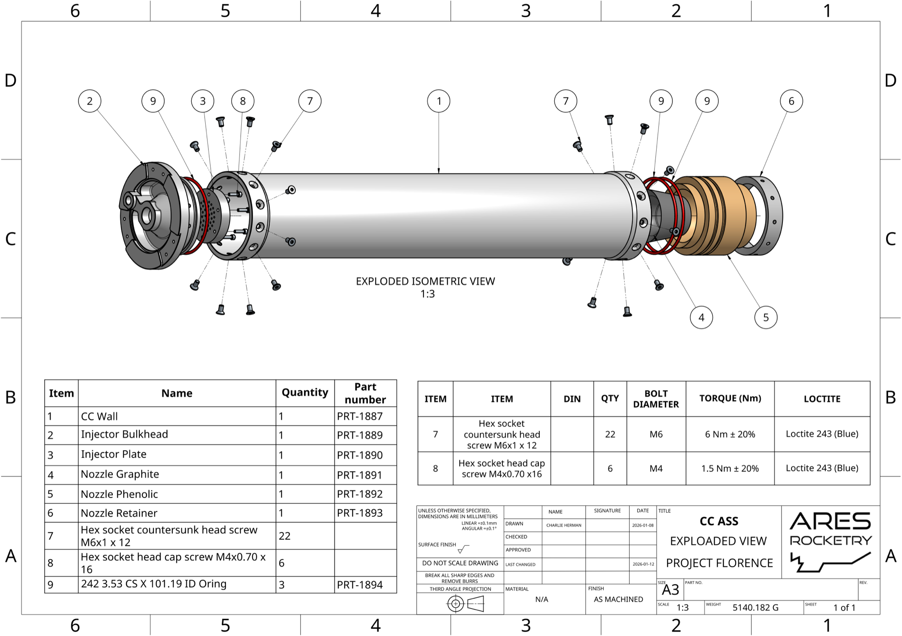
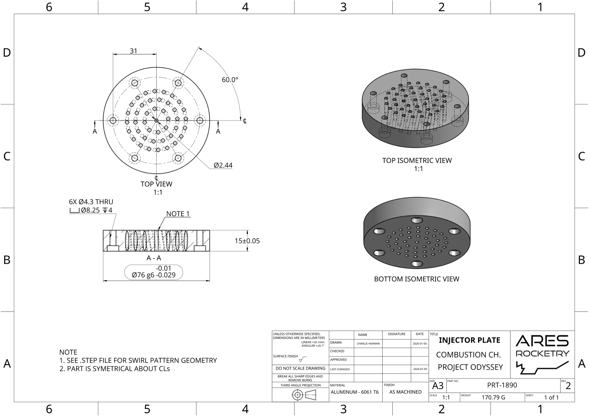

Role Overview
As Chief Engineer, I hold overall technical responsibility for the ARES competition flight vehicle, Odyssey. That means setting the engineering direction, running design reviews, and being the final sign-off on decisions that affect flight safety and competition eligibility.
| Team | ARES — University of Melbourne |
| Role | Chief Engineer |
| Period | July 2025 – Present |
| Sub-teams | Propulsion, Structures, Avionics, Recovery, Payload |

Setting up the thrust test stand in Serpentine — launch day operations.
Responsibilities
- Setting and maintaining the technical roadmap across all sub-systems for each competition vehicle
- Chairing design reviews (PDR, CDR) and ensuring every sub-team meets gate criteria before proceeding
- Owning the system integration plan — interface definitions, mass budget, and schedule
- Final engineering sign-off on all flight-critical components and assemblies
- Coordinating with various stakeholders to ensure regulatory and safety compliance
- Working with sub-team leads and supporting their technical development
- Managing the relationship between engineering decisions and team resource constraints
- Leading technical meetings and managing project management updates/timelines
- Assisting with design/CAD and engineering drawing creation where necessary
- Speaking on technical development updates at team meetings and regular update posts in teams channels

Sub-scale combustion chamber.
Mechanical Drawings
As part of the Odyssey development process, I helped produce formal engineering drawings for precision machined parts — covering tolerances, surface finish requirements, torque and material specifications needed to send parts out for manufacture. This is an example of some of the work I was required to do, where necessary, to ensure team deadlines were being met.


Left: Chamber Assembly drawing — left view, A-A section, and isometric render. Right: exploded isometric with full BOM.

Injector Plate (PRT-1890) — swirl-pattern injector holes, H7/g6 fits, and GD&T callouts for machine shop manufacture.